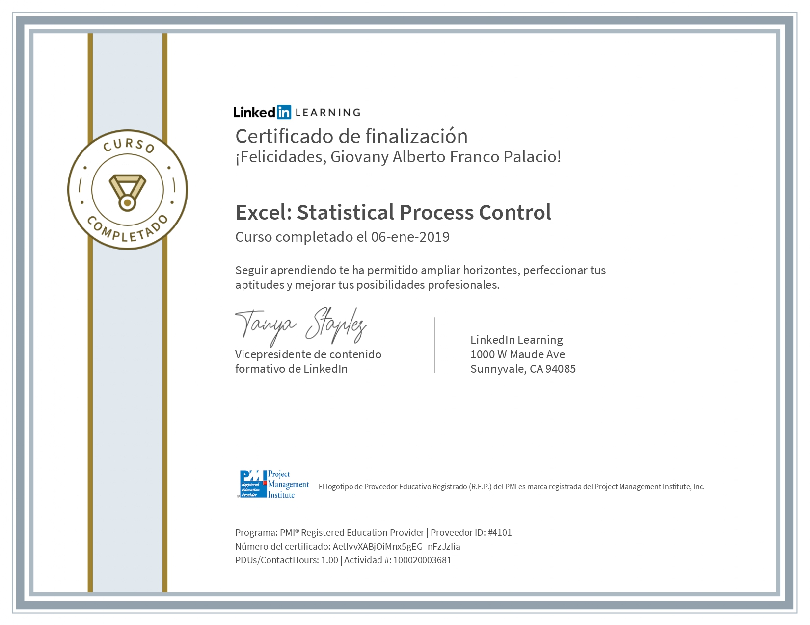
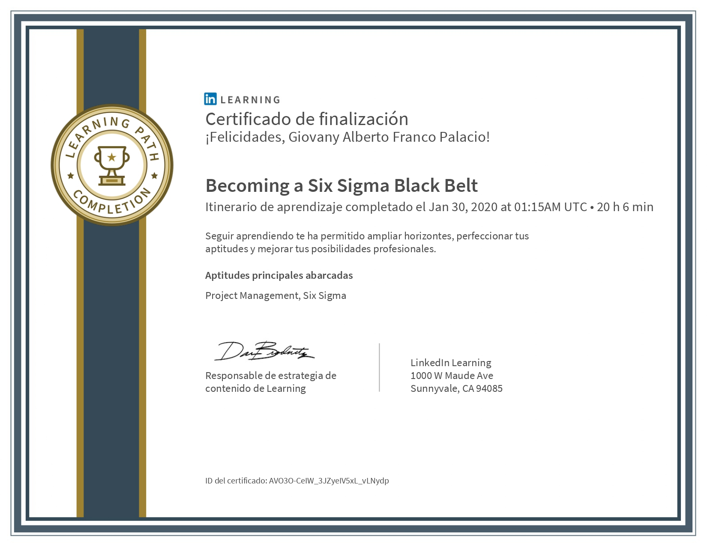

Resumen
Especialista en la administración de los procesos industriales, producción, calidad, planeación, planificación, control y seguridad industrial. Líder de proyectos estratégicos de mejoramiento en la cadena de abastecimiento bajo las filosofías de Lean Manufacturing, Kaizen, 5s, TPM (Gerencia Productiva Total) orientado a optimizar procesos y mejorar el costo industrial.
Resumen
Guirnaldas innovaflora
Me encargo de liderar,coordinar la administración y gestión de indicadores y la programación de producción de la empresa. Además, controlo los costos de producción para garantizar la eficiencia y rentabilidad del proceso productivo. Con 6 supervisores a cargo, dirigen a los operarios y me aseguro del cumplimiento de los objetivos de producción. adicionalmente, lidero proyectos de mejora en diferentes áreas de la empresa, siempre buscando la optimización de los procesos y la maximización del valor añadido. Gracias a mi trabajo y al esfuerzo de mi equipo, logramos una mejora del 20% en la eficiencia del proceso productivo y una reducción del 10% en los costos de producción.
- Alineción Producción vs S@OP
- Administración y control de inventarios
- Gestión de Headcount
Educacion
Administración De Empresas
2014
Universidad Nacional Experímental Símon Rodríguez
Administrador, capacitado en el área administrativa con conocimientos humanísticos y científicos, para manejar en forma eficiente y con criterio racional los proyectos, recursos de la empresa
Liderazgo & Trabajo en equipo en grupos de Mejora Continua
2019
Universidad Politécnica de Valencia
Fases de la mejora de procesos, las características del equipo de trabajo ideal y técnicas para implementar grupos de resolución de problemas
Cursos
Excel Statistical Process Control
2019

Becoming a Six Sigma Black Belt
2020

Project Online Profesional
2019

Otros Cursos
2018-2023
- 5’s Mejora Continua
- Mantenimiento Autónomo
- Mantenimiento Planificado
- Fundamentos de Six sigma.
- Metodología estadística de muestreo de calidad Q2
- Champions en Solución de Problemas UPS
- ABC de Presentaciones Efectivas
- Diseño Instruccional Rol Facilitador
- Prácticas de Empoderamiento.
- DDMRP
Experiencia Profesional
Ingeniero de Producción – Mejora Continua
2019 - Presente
Guirnaldas / Innovaflora,Tocancipá. – Cundinamarca
Jefe de Operaciones Planta Industrial, garantizar el cumplimiento de S&OP, planeación de producción, construcción presupuesto, planificación requerimiento materiales, responsable de inventarios y ajustes. reporte de KPI, Administración del sistema de excelencia operacional, seguimiento árbol de perdidas, implementación de proyectos de mejora y/o ahorros a través de la eliminación de actividades sin valor agregado, soporte a la transformación cultural de la organización.
Objetivo Del Cargo:
- Aumento de la rentabilidad del negocio de 31% a 42% apoyado en la optimización del proceso productivo aplicando herramientas Lean Manufacturing.
- Cumplimiento de precisión de manufactura de 98,7%, OTIF 99,3%, garantizando el cumplimiento de plan de facturación, Bussines Plan +18%.
- Planeación de materiales bajo DDMRP logrando una disminución de 20% de en el costo de inventario.
- Confiabilidad de 99% en inventario mediante controles a consumos en Ordenes de Producción e inventarios cíclicos de control.
- Administración de Indicadores de Rendimiento, aumento de OEE +13pp 85%.
- Facilitador evento Kaizen aumento 32% rendimiento referencia tipo A.
- Líder de proyecto de automatización de empaque logrando un aumento de 18% de capacidad Instalada, aumento de eficiencia +8% pp, disminución 10% HC.
- Disminución 58% de PQRS, mediante plan de capacitación y herramientas de control y seguimiento del Proceso.
- Construcción presupuesto (materia prima y mano de obra).
Coordinador de Producción
2018 Mayo - 2019 Abril
ETERNA S.A – Bogotá, Co
Liderar la mejora constante en la productividad y calidad de productos, enfocándose en Lean Manufacturing y sus herramientas Operativas (Smed, Kanban, TPM, 5’s), Diseñar la estrategia buscando la estandarización en áreas operativas.
Objetivo Del Cargo:
- Coordinación de 2 Equipos Multifuncionales para creación de proyectos orientados al plan estratégico.
- Proyecto disminución pre-forma disminución 18% costo de envase y de reducción 11% desperdicio por variabilidad en los proceso de soplado.
- Conformación de eventos Kaizen Smed con una disminución 23% en tiempos de cambio de referencia, aumento de 15% en eficiencia mediante fijación de center line.
- Diseño de programa 5’s con cumplimiento de 91% de auditorias realizadas.
- Líder proyecto estandarización de formulas con una disminución de 12% mix disminuyendo el número cambios de referencia y tiempos lavado tanques.
- Cumplimiento de meta ajuste de inventario < 1% mensual.
- Control de planes de acción y contramedidas ejecutadas.
- Diseño y control de los indicadores de Gestión Línea de Líquidos, Plásticos (Productividad, Desperdicio, OEE). Registro y seguimiento de Tiempos Perdidos con análisis de causa raíz y contramedidas.
- 0 agostados en CEDI durante 6 meses, cumplimiento 97% OTIF.
- Aumento de 67% a OEE: 82% (+17pp).
Shift Process Leader
2014 Junio - 2017 Diciembre
British American Tobacco. – Caracas, VE
Responsable por la continuidad productiva y técnica del negocio a partir de la administración y gestión de los recursos, programación de planta, líder de Implementación de Lean Manufacturing, mantenimiento industrial, seguimiento indicadores sistema de gestión diaria, garantizando el uso eco-eficiente de los recursos.
Objetivo Del Cargo:
- Impulsar la eficiencia de la fábrica (+4%) anual, mediante la Implementación de Herramientas Lean, Eventos Kaizen, Estandarización.
- Reducción de Pérdidas de Materiales Productivos en 2% a través de Implementación de Waste Management.
- Disminución de Productos No Conforme asegurando la calidad del producto de acuerdo a las especificaciones y regulaciones vigentes 91% de índice de calidad promedio en todos los SKU.
- Garantizar el conformance to Schedule mediante el cumplimiento del plan de producción semanal superior al 98%.
- Enseñar principios y herramientas de LEAN a todos los niveles funcionales. Con foco en eliminación de pérdidas.
- Logro “0” accidentes durante 9 meses mediante evaluación de seguridad y riesgo en los equipos, diminución 62% numero de accidentes.
- Proyecto de Excelencia Change Over disminución 10% tiempos cambio de referencia.
- Cierre de 95% de los planes de acción proyectados intervención de equipos.
- Líder de la implementación y seguimiento de Housekeeping del departamento de producción.
- Responsable ante auditoria ISO 9001 del área de producción, logro recertificación por los próximos 2 años, sin penalidades.
- Manejo de proveedores y órdenes de compra vinculados al mantenimiento locativo del departamento.
- Soporte en Implementación de Mantenimiento Autónomo agente de cambio.
Technical Process
2010 Febrero - 2014 Junio
British American Tobacco. – Caracas, VE
Líder de planeación y ejecución de mantenimiento de equipos productivos garantizando el rendimiento OEE.
Objetivo Del Cargo:
- Administración de Indicadores de eficiencia de Mantenimiento(mtbf,mttr).
- Coordinación de reuniones pre-mantenimiento para planificar recurso humano, disponibilidad de repuestos y herramientas, cumplimiento 100% tiempo programado.
- Responsable de creación y cierre de técnico de ordenes de mantenimiento en SAP, en perfil Planificación de Mantenimiento.
- Disminución 80% paradas No planificadas.
- Análisis de quiebres, diagnostico térmico de equipos rotativos.
- Administración pilar AM, loss tree pérdidas, análisis de frecuencia y tiempos de paro.